Introducción y Vista General
Bienvenido al manual interactivo de RACK Designer. Esta herramienta gráfica está diseñada para simplificar el diseño, documentación e inventario de Centros de Datos.
Tip: Puedes alternar entre el "Modo Oscuro" y "Modo Claro" usando el menú principal ☰ en la esquina superior derecha de la aplicación.


Áreas de Trabajo
- Menú Principal (Hamburguesa): Abre un listado de opciones de persistencia para Guardar/Cargar el proyecto en archivos locales `.json`, o gestionar la interfaz gráfica (Modo Claro/Oscuro).
- Pestañas Laterales: Te permiten alternar entre buscar y agregar Racks o Equipos individuales.
- Filtros Inferiores: Rápidamente aíslan tipos de equipos en la lista inferior (Todos, Servers, Red, Storage, Piso).

- Cabecera: Controles globales y cambio de Vistas (Física / Topología).
- Lienzo Central: Tu área principal de diseño donde arrastrarás los equipos. Al utilizar el botón "Expandir" o "Contraer", los paneles laterales se ocultan para maximizar tu área de trabajo.
- Panel Inferior: Estadísticas, inventario tabular y catálogo de arrastre.

Infraestructura (Salas y Gabinetes)
Gestión de Salas
Todo el equipo debe organizarse dentro de una "Sala". Las salas contienen "Gabinetes" (Racks) donde atornillarás los servidores.
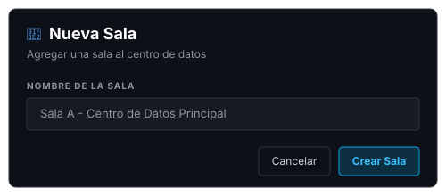
Crear un Gabinete
Haciendo clic derecho en el lienzo azul, podrás crear un nuevo Rack. Deberás asignarle un Nombre, una altura en Unidades (U) (típicamente 42U o 48U) y un Color distintivo.
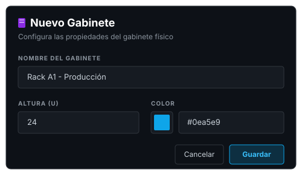

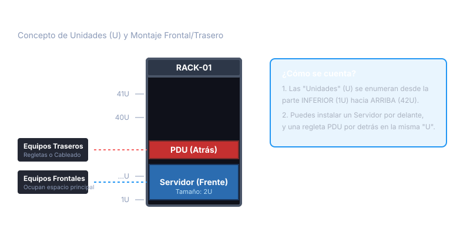
Como se muestra en la figura, cada unidad (U) puede alojar un equipo frontal y, de forma independiente, un equipo trasero (como regletas eléctricas o PDUs) sin chocar entre sí.
Gestión de Equipos
Métodos de Instalación
- Arrastrar y Soltar (Drag & Drop): Arrastra un equipo desde el catálogo izquierdo y suéltalo sobre una U específica.
- Por Menú Contextual: Haz clic derecho en cualquier espacio vacío del Rack y selecciona "Instalar Equipo".
- Ubicación Asistida: Haz clic en el botón morado
⚡ Agregar Equipode la barra inferior para usar el asistente de instalación paso a paso sin arrastrar.
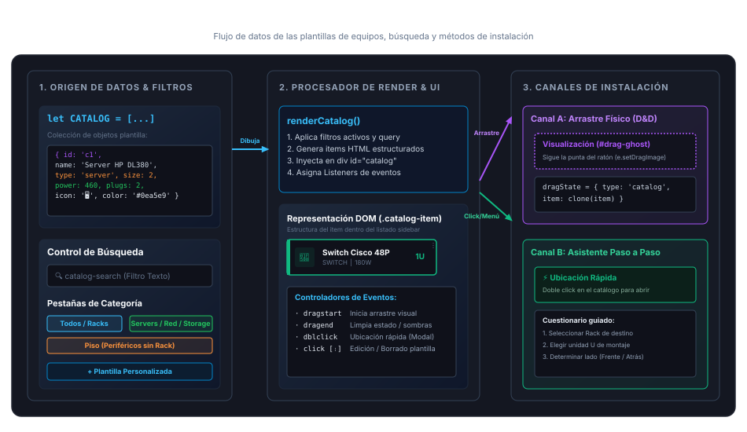

Módulos de Configuración
Al editar un equipo, verás casillas de verificación (Checkboxes) para habilitar configuraciones avanzadas. Si un equipo es "pasivo" (ej. un patch panel), no necesitas habilitar estos módulos.
Propiedades y Ficha Técnica
Haciendo doble clic en un equipo, se abrirá su ficha técnica. Aquí puedes documentar:

- Módulo de Red: Despliega IP y MAC.
- Módulo de Energía: Despliega las Tomas de Entrada (requeridas para encender el equipo) y las Tomas de Salida (proporcionadas por el equipo, útil para UPS/PDU).
Topología y Redes
La vista topológica permite conectar los equipos mediante cables lógicos. Los equipos se renderizan como Nodos interconectados.

Para conectar dos equipos, simplemente haz doble clic en un nodo de origen y luego selecciona el nodo de destino. Esto abrirá el menú de configuración de enlace.
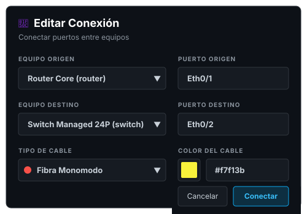
A medida que diseñes tu red, podrás visualizar la arquitectura completa (Full-Screen) donde se aprecian las rutas de cada cable. El color de las líneas representará los enlaces que has creado.

Puedes utilizar la rueda del ratón o los controles de zoom (🔍) en la barra superior para acercarte (Zoom In) y observar en detalle los nodos y las rutas de cableado, incluyendo las IPs de los equipos principales.

Tabla de Conexiones
Alternando la pestaña del panel inferior a Conexiones, puedes acceder a una bitácora tabular de todos los enlaces que has creado. Aquí verás el detalle de los puertos y colores asignados, con la posibilidad de editarlos o eliminarlos masivamente.
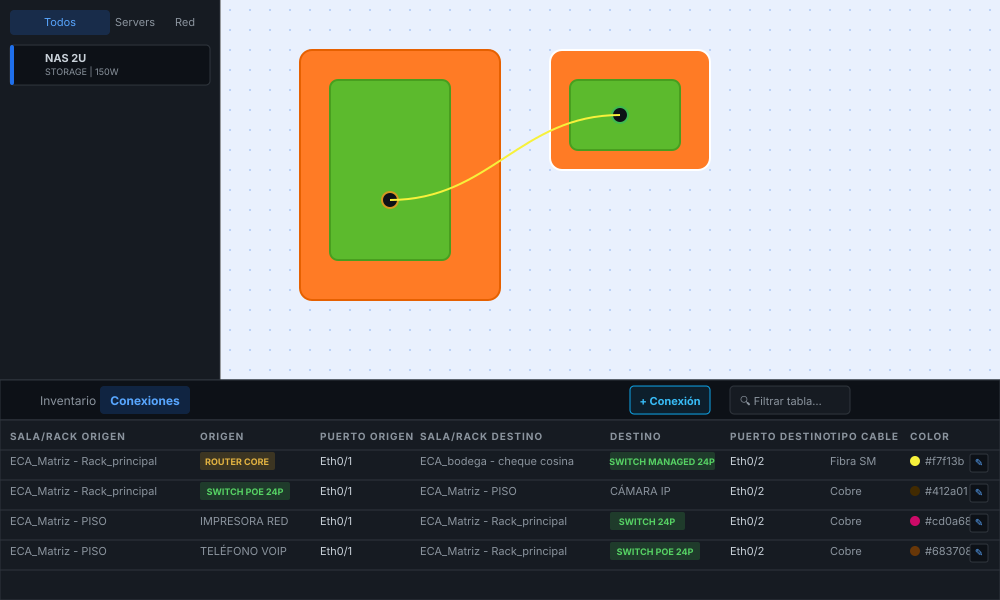
Para mayor comodidad durante auditorías extensas, puedes hacer clic en el botón Expandir de la tabla para ocultar el lienzo y ver la bitácora en pantalla completa.

Respaldos y Exportación
Es fundamental respaldar el trabajo periódicamente y utilizar la tabla de inventario para auditorías.

- Archivo JSON: En el menú superior, usa "Guardar Proyecto" para descargar todo el centro de datos.
- Reporte Tabular: En el panel de inventario o conexiones expandidas, presiona
⬇ Excelo⬇ CSVpara auditar los equipos. - Imagen Fotográfica: Usa el botón
📷 PNGen la barra superior y selecciona el rack a exportar para generar una instantánea del armario (incluyendo la vista trasera si tiene equipos de piso).

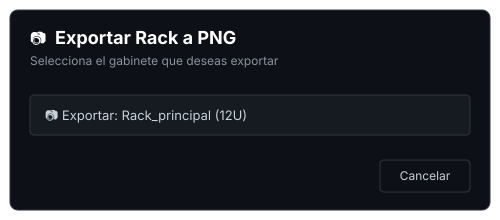

Estructura y Arquitectura del Sistema
RACK Designer 2 utiliza un patrón de arquitectura reactiva de flujo unidireccional en JavaScript nativo (Vanilla JS). Esto elimina la necesidad de frameworks pesados, manteniendo la aplicación extremadamente veloz, ligera y fácil de mantener.
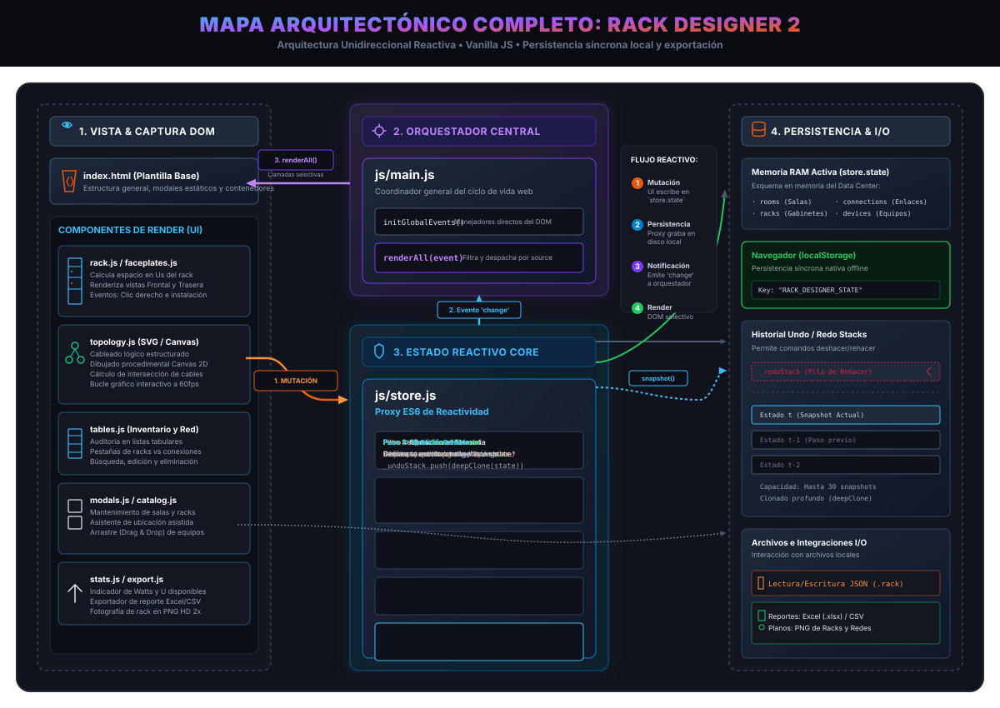
Componentes del Flujo
- 1. Interacción del Usuario (Mutación): Cuando el usuario interactúa con la interfaz (como arrastrar un equipo, editar puertos en un modal o renombrar una sala), las vistas en la carpeta
js/ui/escriben directamente los nuevos valores en el estado centralstore.stateo invocan métodos de acción en el almacén de datos. - 2. Almacén Reactivo (
store.js): Implementado mediante un objeto Proxy ES6. Este Proxy intercepta cualquier escritura de propiedades en el estado, realiza automáticamente la persistencia guardando los datos serializados en ellocalStoragedel navegador, gestiona el historial de cambios (Pila de Deshacer/Rehacer) y finalmente emite un evento global de tipo'change'junto con metadatos sobre la mutación ocurrida. - 3. Orquestador Central (
main.js): Actúa como el controlador o "Dispatcher". Está suscrito al evento de cambio delstore. Al recibir el evento'change', evalúa qué parte de los datos mutó y ejecuta las llamadas selectivas a las funciones de renderizado de la UI para mantener el DOM perfectamente sincronizado con el estado actual. - 4. Módulos de Renderizado (
js/ui/): Componentes especializados e independientes (comorack.jspara la grilla física,topology.jspara los enlaces SVG de red otables.jspara el inventario tabular) que se encargan de leer el estado actualizado y construir la estructura DOM correspondiente enindex.html.
Nota técnica: Toda la persistencia local de la aplicación funciona de manera síncrona en cada edición gracias al Proxy. Esto asegura que si el usuario refresca el navegador o pierde la conexión, no perderá ningún progreso del diseño de su Centro de Datos.
El Flujo de Renderizado (main.js y Módulos UI)
Este bloque del diagrama detalla cómo se realiza el enlace dinámico entre la lógica del controlador global y las vistas modulares del DOM:
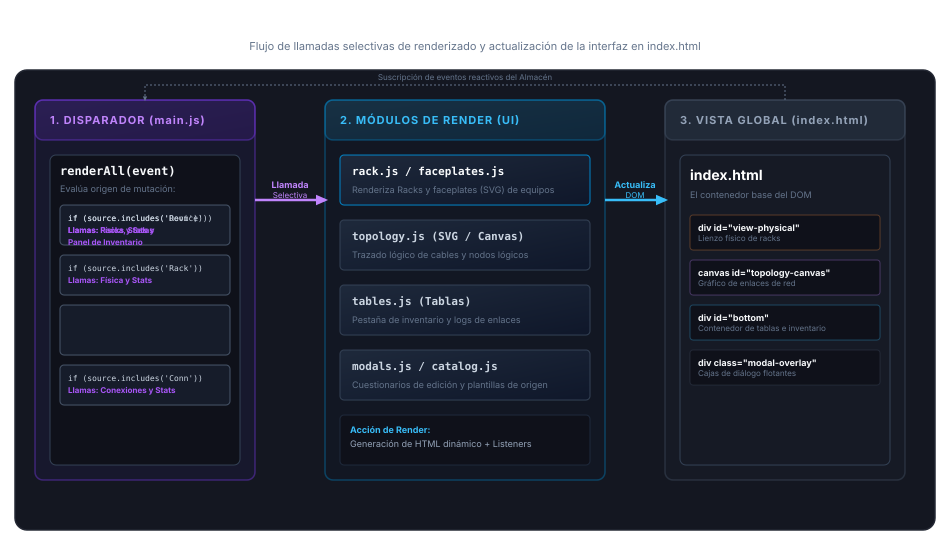
- Filtro de Despacho (main.js): El método
renderAll(event)recibe el evento de cambio y decide a quién llamar según el módulo afectado. Por ejemplo, si el cambio proviene de un dispositivo, llama selectivamente a actualizar el inventario y la vista física, pero evita recalcular la topología o recrear las salas innecesariamente, lo que ahorra tiempo de cómputo. - Actualización del DOM (index.html): Los archivos en
js/ui/son vistas desacopladas. Al ser invocados, regeneran la plantilla literal HTML correspondiente y actualizan el fragmento del DOM correspondiente (comodiv#view-physicalo la tabla de inventario), y reasocian los listeners de eventos para mantener la interactividad.
El Orquestador Central (js/main.js)
El orquestador central (o controlador) es el bloque principal que centraliza las escuchas de interacciones del usuario y distribuye el renderizado reactivo a través de la aplicación:
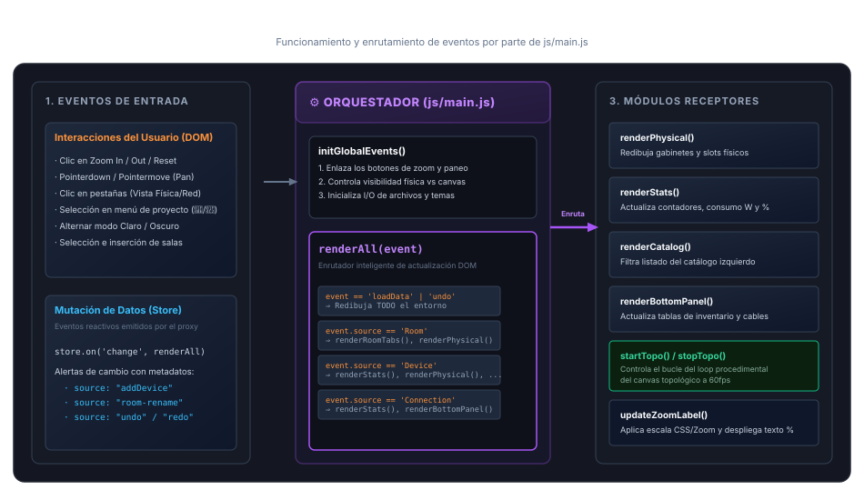
- Escucha de Eventos Globales: La función
initGlobalEvents()vincula directamente los eventos del DOM relacionados con interacciones generales del usuario que no alteran el estado de forma reactiva (zoom de topología, paneo del canvas, alternado de modo Claro/Oscuro, etc.). - Enrutamiento Reactivo inteligente: A través de la función
renderAll(event), actúa como un despachador que recibe el evento `'change'` delstore. Al analizar el metadatoevent.source, decide qué modulo de la UI actualizar, garantizando un renderizado eficiente y local en lugar de realizar cargas globales costosas.
Los Lienzos de Trabajo (Canvas vs DOM)
La aplicación cuenta con dos modalidades gráficas con representaciones de memoria y tecnologías de renderizado completamente diferentes:
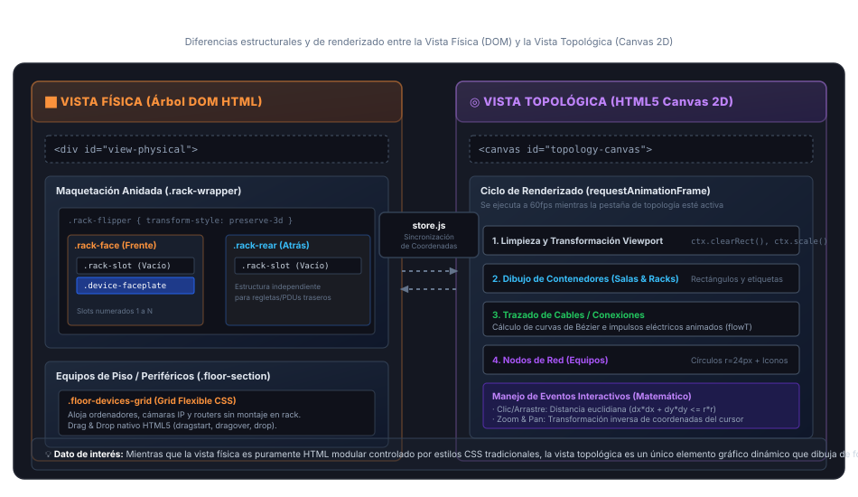
- Vista Física (Árbol DOM HTML): Renderizada dentro de
<div id="view-physical">. Utiliza elementos HTML nativos anidados (.rack-wrapper,.rack-flipper,.rack-slot) controlados por la hoja de estilos CSS general. Responde directamente a la API nativa de Drag & Drop de HTML5 para calcular en qué unidad (U) cae un elemento. Es una vista estática y estructurada de fácil acceso. - Vista Topológica (HTML5 Canvas 2D): Dibujada dentro de un único elemento
<canvas id="topology-canvas">. Es un lienzo completamente dinámico renderizado de manera procedimental a través de un búfer gráfico 2D a 60 fotogramas por segundo (gracias arequestAnimationFrame). Toda la interactividad (saber en qué nodo se hace clic, arrastrar salas o racks y redimensionarlos) se realiza mediante cálculos matemáticos vectoriales y distancias euclidianas.
Estructura de Directorios
A continuación se presenta el mapa visual de la distribución física de archivos y carpetas del proyecto:
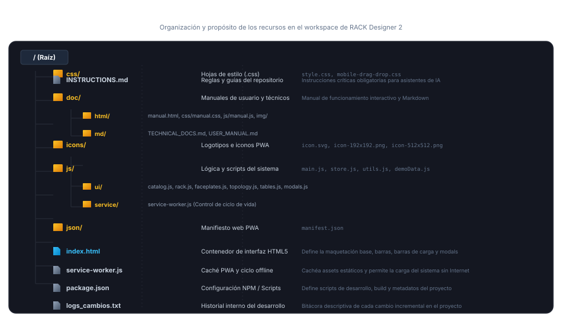